Two delivery models were compared. Model A was off by 5 minutes on every one of ten trips. Model B was perfect on nine and 50 minutes late on the tenth.
Total error: A = 50 minutes, B = 50 minutes. By that measure they were identical.
But no customer would call them identical. One is mildly unreliable; the other ruins a delivery completely.
Squaring the errors separates them: MSE makes B far worse than A, because 50² dwarfs ten lots of 5². Which measure you choose is a decision about which kind of mistake you refuse to tolerate.
🔑 The one idea
MAE treats every miss equally. MSE punishes big misses hard. RMSE puts MSE back into real units.
Source: external course (WsCubeTech ML playlist — "Why Use Cost Function??",
"Cost Function", and "Types of Cost Function" slides, shared as screenshots).
This is a concepts-only note — same as
24_Regression_Analysis.MD and
25_Simple_Linear_Regression.MD. No code,
no notebook yet. Simple/Multiple/Polynomial Linear Regression
(26–28) already used a fitted m and c without dwelling on how the
model decided those were the right numbers — this note fills that gap. The
hands-on notebook comes later, as its own file.
Why Do We Even Need a Cost Function?
The course's own motivating slide shows two scatter plots — real data with a
visible trend, but the dots don't sit on a single perfect line. Recall from
25: for any such scatter, there isn't just one possible straight line
you could draw through it. You could pick almost any m and c and get
a line. Some of those lines would hug the data closely; others would be
way off.
The problem: "closely" and "way off" are just words. A computer can't
act on a vibe. Before an algorithm can search for the bestm and c, it
needs a single number that says exactly how good or bad any one candidate
line is — so two candidates can be compared, and the search has something
concrete to minimize.
The backend-engineer version: think of a CI pipeline with no test
suite — you can eyeball a pull request and feel like it's fine, but you
have no automated, repeatable score to gate on. A cost function is that
test suite for a model: it runs the model's predictions against the known
correct answers and returns one number — how wrong, in total, the model
currently is. Without that number, "train the model" has no defined
target, the same way "make the build good" isn't an actionable CI check
until it's phrased as "zero failing tests."
That's the whole answer to "why use a cost function": it turns "is this
model good?" from an opinion into a measurable, comparable, minimizable
number.
What Is a Cost Function, Exactly?
The course defines it plainly:
Note
"A cost function is an important parameter that determines how well a
machine learning model performs for a given dataset."
"Cost function is a measure of how wrong the model is in estimating the
relationship between X (input) and Y (output) parameter."
In plain terms: feed the model's predictions and the real answers into the
cost function, and it hands back one number summarizing the total
error across the whole dataset. Small number = good fit. Large number =
bad fit.
Cost function vs. loss function — a common mix-up: the two terms get
used interchangeably a lot, but strictly:
Loss = the error for one single training example.
Cost = the average (or total) of the loss across every
example in the dataset — the aggregate score.
So the cost function is really "take the loss function, apply it to every
row, and average the results."
Where Exactly Is a Cost Function Used in ML?
It sits right in the middle of the training loop — for every trainable
model, not just Linear Regression:
flow diagram (rendered in the notebook)
flowchart LR
A["Model starts with<br/>a guess: m, c"] --> B["Predict ŷ for<br/>every training row"]
B --> C["Cost Function<br/>compares ŷ vs actual y"]
C --> D{"Cost low<br/>enough?"}
D -- "No" --> E["Adjust m, c<br/>(Gradient Descent)"]
E --> B
D -- "Yes" --> F["Final trained model<br/>(m, c locked in)"]
style C fill:#2f6fed,stroke:#1e4fae,color:#fff
style E fill:#b3781f,stroke:#8a5c16,color:#fff
style F fill:#2f9e6f,stroke:#1e6b4b,color:#fff
Step by step:
The model starts with some guess for its parameters (m and c for a
straight line — could be zero, could be random).
It predicts ŷ ("y-hat") for every row in the training data.
The cost function compares every ŷ against the real y and
collapses the gap into one number.
If that number isn't low enough yet, the parameters get nudged in the
direction that should reduce it — that nudging step is Gradient
Descent, the very next topic.
Repeat until the cost stops meaningfully shrinking. Whatever m and c
the model landed on is the trained model — nothing else is stored.
This is also the direct answer to "where in 25 did this already show
up?" — the Ordinary Least Squares method mentioned there is exactly
this: pick MSE (below) as the cost function, and for plain Linear
Regression there happens to be a direct formula that jumps straight to the
minimum, no step-by-step searching required. Other model types (logistic
regression, neural networks, …) don't get that shortcut — they genuinely
need the iterative loop above, which is why Gradient Descent matters as a
general-purpose tool, not just a Linear Regression detail.
A Worked Example: Comparing Two Candidate Lines
Using three rows from the cgpa → package dataset from 25:
cgpa (x)
package (y, actual)
6.89
3.26
5.12
1.98
7.82
3.25
Say we're comparing two candidate lines someone could have picked:
Line A:m = 0.45, c = −0.1
x
y (actual)
ŷ = 0.45x − 0.1
residual (y − ŷ)
residual²
6.89
3.26
3.00
0.26
0.067
5.12
1.98
2.20
−0.22
0.050
7.82
3.25
3.42
−0.17
0.029
MSE_A = (0.067 + 0.050 + 0.029) / 3 ≈ 0.049
Line B:m = 0.15, c = 1.5
x
y (actual)
ŷ = 0.15x + 1.5
residual (y − ŷ)
residual²
6.89
3.26
2.53
0.73
0.528
5.12
1.98
2.27
−0.29
0.083
7.82
3.25
2.67
0.58
0.333
MSE_B = (0.528 + 0.083 + 0.333) / 3 ≈ 0.315
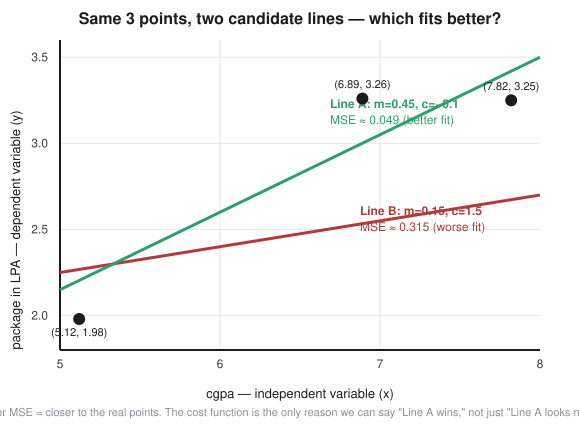
Scatter plot of the three cgpa/package points with two candidate lines drawn — Line A in green sitting close to the points with MSE around 0.049, Line B in red sitting further from the points with MSE around 0.315
MSE_A ≈ 0.049 is far smaller than MSE_B ≈ 0.315 — so Line A is the
better fit. That comparison is the entire point of a cost function: two
lines, both plausible-looking guesses, but only a computed number can say
which one is actually closer to the real data. "Best line" isn't decided
by eye — it's decided by whichever m, c produces the lowest cost.
The Cost Curve — Visualizing "Search for the Minimum"
Zoom out from one pair of guesses to every possible value of m. Plot
the cost on the y-axis against candidate m values on the x-axis (holding
c fixed for a moment, just to keep it a 2D picture), and — for a cost
function like MSE — you get a smooth, bowl-shaped (U-shaped) curve:
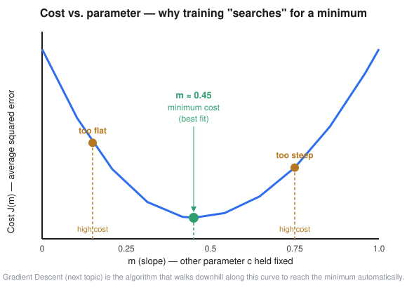
A bowl-shaped curve plotting cost J(m) against candidate slope values m. The curve dips to a clear minimum around m ≈ 0.45, with two marked example points on either side — one too flat, one too steep — both showing higher cost than the minimum
Pick an m too small (too flat a line) → high cost.
Pick an m too large (too steep a line) → also high cost.
Somewhere in between sits the single lowest point on the curve — the m
that minimizes cost, i.e. the best-fitting slope.
"Training a model" literally means: find the bottom of this bowl. For
Simple Linear Regression, Ordinary Least Squares jumps straight there with
a formula. For most other models, an algorithm has to walk down the curve
step by step — that's Gradient Descent, up next. This picture is
exactly why: without a cost function, there's no bowl to walk down in the
first place, and no way to even know which direction is "downhill."
Types of Cost Function
The course slide splits cost functions into two families based on what the
model is predicting — the same split as regression vs. classification from
24. The specific regression sub-types slide wasn't captured in the
screenshots (the classification slide starts numbering at "2." and "3."),
so the three below are filled in as the standard, universally-taught set:
Average of the squared gaps between actual and predicted
Squaring makes big misses count much more than small ones — sensitive to outliers. Used in the worked example above.
MAE — Mean Absolute Error
(1/n) × Σ \|y − ŷ\|
Average of the plain (absolute) gaps
Every error counts equally, big or small — more robust to outliers than MSE
RMSE — Root Mean Squared Error
√MSE
MSE, square-rooted back into the original units of y
Easier to interpret directly (e.g. "off by ~$0.05 LPA on average") since MSE's squaring distorts the unit
Classification Cost Functions
From the course slide directly:
Note
"Classification models are used to make predictions of categorical
variables, such as predictions for 0 or 1, Cat or dog, etc."
"A multi-class classification cost function is used in the
classification problems for which instances are allocated to one of more
than two classes."
Name
Used when
Plain-English meaning
Binary Cross-Entropy (a.k.a. Log Loss)
Exactly 2 classes (0/1, spam/not-spam, cat/dog)
Penalizes a confident and wrong prediction very heavily, and a confident correct prediction very lightly — rewards well-calibrated confidence, not just a right/wrong guess
Categorical Cross-Entropy
3+ classes
The same confidence-aware penalty idea, extended across every possible class instead of just two
Why not just use MSE for classification too? MSE is built for
continuous numbers where "off by a little" and "off by a lot" scale
smoothly. Classification outputs are probabilities squeezed between 0 and
1 — cross-entropy is specifically shaped to penalize a bad confident
guess correctly, which MSE handles poorly. Full mechanics of cross-entropy
are out of scope for this phase (roadmap depth rule: conceptual
understanding before Generative AI, not derivation) — this is filed away
for when we actually reach Classification / Logistic Regression.
A Simple Analogy
Continuing the taxi fare formula analogy from 25
(fare = perKmRate × distance + baseFare, where perKmRate is m and
baseFare is c):
A cost function is the end-of-month audit report. The taxi company
pulls up thousands of past rides, compares what the formula would have
charged against what was actually agreed as fair, and boils every one of
those gaps into a single company-wide "how far off are we, on average"
score. Two different perKmRate/baseFare combinations get two different
audit scores — and the company keeps adjusting the formula until that
score is as low as it can get. That audit score is the cost function; the
adjusting process is Gradient Descent.
FAQ — Common Mix-Ups
"Is cost function the same thing as loss function?"
Not quite. Loss is the error for one example; cost is the
average loss across the whole dataset (or batch). People often
say them interchangeably, but the precise distinction is: loss →
per-row, cost → aggregate.
"Why square the errors in MSE instead of just adding the raw
differences?"
Raw differences can be positive or negative and would cancel each
other out (a point 2 units above the line and a point 2 units below
would net to zero — as if the model were perfect). Squaring (or taking
the absolute value, as MAE does) forces every error to be positive
before combining, so errors can't hide behind each other.
"Does a lower cost always mean a better real-world model?"
Not automatically. A cost pushed too low on the training data alone
can be a sign of overfitting — the model memorizing the training rows
rather than learning the general trend. That's a topic for later; for
now, just note that "minimize cost" means minimize it in a way that
still generalizes, not chase zero at any cost.
"Why does classification need a different cost function than
regression?"
MSE assumes errors scale smoothly, which fits continuous numbers.
Classification models output probabilities (0 to 1), and cross-entropy
is specifically built to punish a confident, wrong prediction far
more than an unsure, wrong one — a shape MSE doesn't capture.
Quick Recap
Term
One-line meaning
Cost function
One number summarizing how wrong the model's predictions are, across the whole dataset
Loss function
The error for a single example (cost = average loss)
MSE
Average squared error — punishes big misses hard
MAE
Average absolute error — treats every miss equally
RMSE
√MSE — same units as the target, easier to read
Binary Cross-Entropy / Log Loss
Cost function for 2-class classification
Categorical Cross-Entropy
Cost function for 3+ class classification
Cost curve
Cost plotted against a parameter — bowl-shaped for MSE; training = finding its bottom
Interview-Style Q&A
Q: In one sentence, what is a cost function?
A: A function that measures how wrong a model's predictions are across an
entire dataset, collapsing that error into a single number the training
process tries to minimize.
Q: What's the difference between a cost function and a loss function?
A: A loss function measures the error on a single training example; a
cost function is the average (or sum) of the loss across the whole
dataset — cost is the aggregate, loss is the per-example building block.
Q: Why does Linear Regression typically use Mean Squared Error as its
cost function?
A: Squaring the residuals prevents positive and negative errors from
canceling out, and it penalizes large errors disproportionately, which
pairs naturally with Ordinary Least Squares, the closed-form method used
to find the exact best-fit line.
Q: Give one concrete difference between MSE and MAE, and when you'd
prefer one over the other.
A: MSE squares each error, so a few large errors dominate the score —
useful when big mistakes should be penalized heavily, but sensitive to
outliers. MAE takes the absolute value, so every error contributes
proportionally — more robust when the dataset has outliers you don't want
to disproportionately influence the model.
Q: Why can't classification problems just reuse MSE as their cost
function?
A: Classification outputs are probabilities between 0 and 1, and MSE
doesn't correctly penalize a confidently wrong prediction. Cross-entropy
(Log Loss) is shaped specifically to punish confident-but-wrong
predictions heavily while rewarding well-calibrated correct ones.
Coming Up Next
⬜ Gradient Descent — the algorithm that actually walks down the cost
curve above to find its minimum, step by step.
⬜ The hands-on notebook for Cost Function (and likely Gradient Descent
together), once we're ready to go practical.
Source: external course (WsCubeTech ML playlist — "Mean Absolute Error"
slide, shared as a screenshot). 29_Cost_Function.MD already introduced
MAE in one row of a comparison table, alongside MSE and RMSE. This file
gives MAE its own space — one idea at a time, with real pictures, and a
proper look at where it falls short.
The One-Line Idea
Mean Absolute Error tells you how far off your predictions were, on
average — without caring whether you guessed too high or too low.
That's it. Everything else in this note is just unpacking that one
sentence.
A Story You Can Picture
You're a teacher. Before a quiz, you guess how many marks (out of 10)
each of 5 students will score. After the quiz, you check your guesses
against what they actually got.
Student
Actual marks
Your guess
Miss (actual − guess)
Size of the miss
A
8
6
2
2
B
5
7
−2
2
C
9
9
0
0
D
3
5
−2
2
E
7
8
−1
1
For student A you guessed too low. For student B you guessed too high.
For C you nailed it exactly. It doesn't matter — for MAE, only the
size of the miss counts, not the direction.
Add up the sizes: 2 + 2 + 0 + 2 + 1 = 7. Divide by 5 students: 7 ÷ 5 = 1.4.
MAE = 1.4. In plain words: your guesses were off by about 1.4 marks
per student, on average.
Nobody talks like that out loud, so here's the same thing in words:
y is the actual value, ŷ ("y-hat") is your prediction.
y − ŷ is how far off you were for one row — this can be positive
(you guessed too low) or negative (you guessed too high).
The two vertical bars | | mean absolute value: throw away the
plus/minus sign, keep only the size. |2| is 2, and |−2| is also 2 —
both just mean "off by 2," full stop.
Σ (sigma) means "add all of these up," one per row.
1/n means "now divide by how many rows there were" — turning the
total into an average.
So the whole formula reads as: for every row, find how far off you
were, ignore the direction, add all those distances up, then average
them.
Picture It
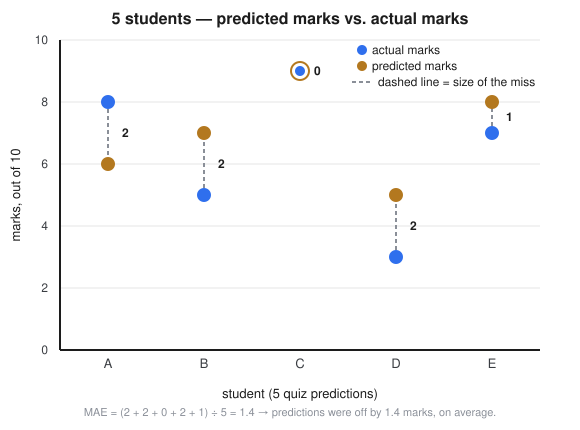
Chart showing 5 students, each with an actual-marks dot in blue and a predicted-marks dot in orange, joined by a dashed grey line labeled with the size of the gap between them
Every dashed grey line is one student's miss. MAE is just the average
length of these dashed lines — some are long, one (student C) doesn't
exist at all because the guess was perfect. Average them all and you get
1.4.
Wait — Why Not Just Add the Raw Misses, Without the Absolute Value?
Because they'd cancel out. Look at the table again: student A's miss was
+2, student B's was −2. Add those two directly and you get 0 — as
if both guesses were perfect, when really both were off by 2 marks. The
absolute value stops a "too high" guess from quietly canceling out a "too
low" guess elsewhere. Without it, a model that's wildly wrong in both
directions could still score a suspiciously good "0 average error."
MAE vs. MSE — Same Job, Different Personality
MAE isn't the only way to score a model's misses. Mean Squared Error
(MSE, covered in 29/30) does almost the same job, but it squares
the miss instead of taking its absolute value. That one difference
changes how each one behaves as errors get bigger:
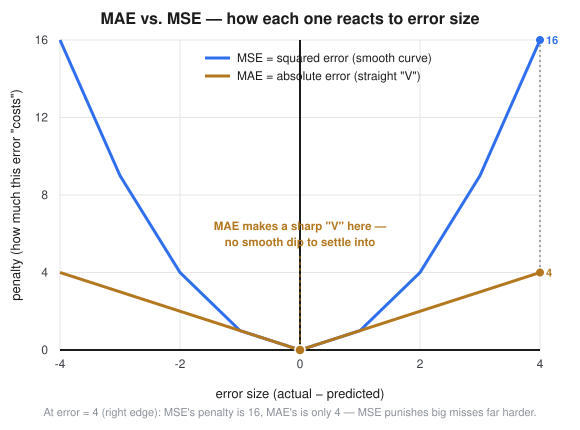
Line chart plotting penalty against error size for two curves — MAE as a straight V-shape growing steadily, MSE as a smooth curve growing much faster for large errors, with a callout showing that at error=4, MSE's penalty is 16 while MAE's is only 4
For small errors, both curves sit low, close to each other.
As the error grows, MSE shoots up fast (squaring a big number makes
it much bigger). MAE just grows in a straight line — twice the
error, twice the penalty, nothing more dramatic than that.
At an error of 4, MSE's penalty is 16 — four times worse than MAE's
penalty of 4.
This is exactly why MAE is called more robust to outliers: one wildly
wrong prediction doesn't get to dominate the whole score the way it does
under MSE. 30_Cost_Function_MSE_GradientDescent.ipynb (Step 10) proves
this with real numbers — adding a single outlier row made MSE jump about
16×, while MAE only grew about 1.5×.
Drawbacks of MAE
MAE being "fair" to every error also costs it something. Four real
drawbacks:
1. The sharp-corner problem.
Look again at the graph above — MAE's curve makes a sharp "V" right at
error = 0, not a smooth dip like MSE's curve. Think of a car driving down
a smooth valley versus a car driving down a road that suddenly changes
direction at a sharp corner. The smooth valley lets the car gently slow
down and glide to a stop exactly at the bottom. The sharp corner doesn't
give the car a smooth "you're getting close, slow down" signal — it can
overshoot and wobble around the bottom instead of settling into it
precisely. That's a real problem for Gradient Descent, which relies on a
smooth slope to know how much to adjust at each step.
2. Every mistake costs the same, per unit — even the ones that
shouldn't.
MAE doesn't get extra alarmed by one huge mistake — it just adds it to
the pile like any other. That's great when you don't want one freak
outlier to hijack training. But if a single big miss genuinely matters
more than several small ones (say, predicting someone's flight departure
30 minutes late instead of 2 hours late is a much bigger deal than being
off by a minute), MAE won't push the model any harder to fix that one big
case than it pushes to fix all the small ones.
3. Training tends to be slower and trickier.
Because of the sharp corner in drawback #1, optimizers that expect a
smooth slope (plain Gradient Descent, closed-form formulas) have a
harder time with MAE than with MSE. In practice, this is usually solved
with small workarounds — for example, Huber Loss, a hybrid that
behaves like MSE near zero (smooth) and like MAE far from zero
(outlier-resistant). Worth a note for later, not something to chase down
right now.
4. It aims for the "middle" value, not the "average" value.
Mathematically, minimizing MAE pushes a model toward predicting the
median of the data, not the mean. Back to the quiz story: if 9
students score close to 7, and one student was absent and scored 0, a
model trained to minimize MAE will mostly ignore that 0 and aim near 7.
Sometimes that's exactly what you want (the 0 really was a fluke).
Sometimes it isn't — if that 0 was a real, meaningful data point, MAE
quietly downweights it in a way MSE wouldn't.
Quick Comparison Table
MAE
MSE
What it measures
Average absolute miss
Average squared miss
Reaction to one huge outlier
Barely moves
Jumps a lot
Smooth to train on?
No — sharp corner at 0
Yes — smooth curve everywhere
Pulls the model toward
The median
The mean
Units
Same as the target (e.g. marks)
Target squared (e.g. marks²)
FAQ — Common Mix-Ups
"Is MAE always better than MSE because it's 'more robust'?"
No — robust isn't automatically better. If big mistakes genuinely
deserve extra punishment in your problem, MSE's sensitivity is a
feature, not a bug. Pick based on what a big miss actually costs in
the real world, not just on which number sounds nicer.
"Does MAE ever get used with Gradient Descent, given the sharp
corner?"
Yes, in practice, it's just a bit trickier — modern optimizers handle
the non-smooth point reasonably well, and Huber Loss (mentioned above)
is a common workaround when it's a real sticking point.
"MAE and MSE both punish an error of 0 with 0 penalty. So near a
perfect prediction, aren't they the same?"
Close, but not identical. Right around 0 the values are similar, but
the shape differs — MSE curves in smoothly, MAE meets at a sharp
point. That shape difference is exactly drawback #1.
"Why would minimizing MAE give you the median instead of the
mean?"
This is a deeper statistical result and not something to derive by
hand at this phase (roadmap depth rule: conceptual understanding, not
heavy math, before Generative AI) — for now, just trust the intuition
from the quiz story: MAE doesn't get pulled hard by one outlier value,
the same way a median isn't.
Quick Recap
| Term | One-line meaning |
|---|---|
| MAE | Average of |actual − predicted| across every row |
| Absolute value | Keep the size of the error, throw away the +/− direction |
| Robust to outliers | One bad prediction doesn't dominate the score |
| Sharp corner | MAE's graph has no smooth slope right at error = 0 — harder to train on |
| Median vs. mean | MAE optimizes toward the median; MSE optimizes toward the mean |
| Huber Loss | A hybrid loss (MSE near 0, MAE far from 0) that works around MAE's sharp corner |
Interview-Style Q&A
Q: In one sentence, what does Mean Absolute Error measure?
A: The average size of the gap between actual and predicted values,
ignoring whether each individual prediction was too high or too low.
Q: Why take the absolute value instead of just averaging the raw
differences?
A: Raw differences can be positive or negative, so a "too high" guess and
a "too low" guess would cancel out and hide the model's real error — the
absolute value forces every error to count as positive before averaging.
Q: What's the main drawback of using MAE as a loss function during
training, and why?
A: Its graph has a sharp, non-smooth corner right at zero error, which
makes it harder for gradient-based optimizers to converge precisely — they
can wobble around the minimum instead of settling into it smoothly, unlike
MSE's smooth curve.
Q: When would you deliberately choose MAE over MSE?
A: When the dataset has outliers you don't want to disproportionately
influence the model — MAE treats every error proportionally, so one wild
outlier doesn't dominate training the way it would under MSE's squared
penalty.
Coming Up Next
✅ RMSE — the third regression cost function from 29's table,
square-rooting MSE back into the target's original units. See
32_Root_Mean_Squared_Error.MD.
⬜ Huber Loss — the hybrid mentioned in drawback #3, worth a proper
look once we're past the core three.
Source: external course (WsCubeTech ML playlist — "Root Mean Squared Error"
slide, shared as a screenshot, numbered "3." after MAE and MSE in the
course's own list). 29_Cost_Function.MD already introduced RMSE in one
row of a comparison table, and 31_Mean_Absolute_Error.MD gave MAE its own
deep dive. This file does the same for RMSE — the third and last of the
"core three" regression error metrics.
The One-Line Idea
RMSE is just MSE, square-rooted back down to the same units as your
target — it keeps MSE's "punish big misses harder" behavior, but gives you
back a number you can actually read.
That's the whole idea. Everything below just unpacks it.
Same Story, One More Step
Back to the teacher-guessing-quiz-marks story from 31:
Student
Actual marks
Your guess
Miss (actual − guess)
Squared miss
A
8
6
2
4
B
5
7
−2
4
C
9
9
0
0
D
3
5
−2
4
E
7
8
−1
1
Add up the squared misses: 4 + 4 + 0 + 4 + 1 = 13. Divide by 5 students:
13 ÷ 5 = 2.6. That's MSE = 2.6.
But 2.6 what? The original numbers were in "marks." Squaring them makes
the result "marks²" — a unit that doesn't mean anything to a human reading
a report. So take one more step: √2.6 ≈ 1.61.
RMSE = 1.61. In plain words: your guesses were off by about 1.61
marks per student, on average — a number in the same units as the marks
themselves, sitting right next to MAE's 1.4 from 31 for comparison.
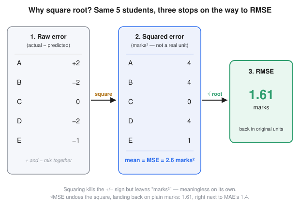
Four-panel diagram showing the same 5 students' errors going through three stages: raw signed errors, squared errors with their mean labeled MSE = 2.6 marks squared, and finally RMSE = 1.61 marks after taking the square root, with a caption explaining that squaring kills the sign but leaves meaningless squared units, and the square root undoes that
Everything inside the square root is exactly MSE's formula from 29/30
— square every error, add them up, divide by n to get the average.
The √ on the outside is the only new thing RMSE adds. It undoes
the squaring, converting the result back from "target units squared" to
"target units."
So RMSE isn't a new way of measuring error — it's a unit-conversion step
bolted onto MSE. Whatever MSE computes, RMSE just square-roots it.
Why Do We Even Need This? (The "Why" From the Slide)
Two honest reasons, and they matter for different audiences:
1. Interpretability — for humans reading the number.
Say you're predicting package (LPA) like in 25–30. If someone reports
"our model's MSE is 0.095," that's 0.095 LPA-squared — nobody has any
intuition for what an "LPA²" is. But "our model's RMSE is 0.31" reads
immediately as "predictions are typically off by about 0.31 LPA" —
directly comparable to the actual salary numbers in the dataset. This
matters most when explaining model quality to a non-technical stakeholder,
or when comparing an error metric against real-world tolerances (e.g. "is
being off by 0.31 LPA acceptable for this use case?").
2. Keeping MSE's error-size sensitivity, just readable.31 showed MAE is gentler on outliers, and MSE is harsh on them, because
squaring makes big misses count disproportionately more. RMSE inherits
that exact behavior from MSE — squaring still happens inside the square
root — so a model that makes a few huge mistakes will still score a worse
RMSE than one that makes many small, evenly-spread mistakes. RMSE keeps
MSE's personality; it just changes MSE's units back to something
readable.
When Do We Need It? (The "When" From the Slide)
The course's own slide line is the key one: "RMSE can be used in
situations where we want to penalize high errors but not as much as MSE
does." That sentence makes more sense once you compare all three side by
side on the same real outlier test from 30 (Step 10) — one extra row was
added to the cgpa → package dataset, a student "offered" 15 LPA when
the real max in the data is under 4 LPA:
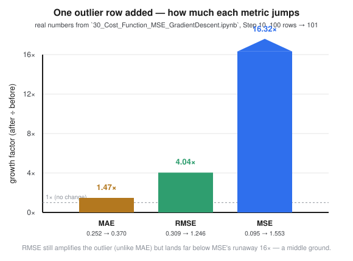
Bar chart comparing how much MAE, RMSE, and MSE each grow when one outlier row is added to the dataset — MAE grows 1.47 times, RMSE grows 4.04 times, and MSE grows 16.32 times, with RMSE landing as a clear middle ground between the other two
Metric
Before (100 rows)
After (101 rows, 1 outlier)
Growth
MAE
0.252
0.370
1.47×
RMSE
0.309
1.246
4.04×
MSE
0.095
1.553
16.32×
This is exactly the "not as much as MSE does" claim, backed by real
numbers: RMSE does react much more sharply to the outlier than MAE
does — it hasn't lost MSE's sensitivity — but it doesn't blow up nearly as
violently as raw MSE, because the square root compresses the scale back
down. Reach for RMSE when you want an error score that still flags big
mistakes as serious, but reported in a unit a human can sanity-check
directly against the data. This is exactly why RMSE, not MSE, is the
metric usually quoted in reports and dashboards — MSE tends to stay behind
the scenes as the thing actually being minimized during training.
RMSE vs. MAE vs. MSE — Quick Comparison
MAE
MSE
RMSE
What it measures
Average absolute miss
Average squared miss
√(average squared miss)
Units
Same as target
Target², not interpretable
Same as target
Reaction to one huge outlier
Barely moves (1.47× above)
Jumps a lot (16.32× above)
Jumps less than MSE (4.04× above)
Smooth to train on?
No — sharp corner at 0
Yes
Yes (same smooth shape as MSE, just rescaled)
Typically used for
Robust error reporting
The actual quantity minimized during training
Human-readable error reporting
FAQ — Common Mix-Ups
"Is RMSE a completely different formula from MSE?"
No — it's MSE with one extra step. If you can compute MSE, you already
have RMSE; just take the square root of the result. There's no separate
"RMSE logic" to learn.
"If RMSE is just √MSE, why would anyone train a model on MSE instead
of RMSE directly?"
Mathematically, minimizing MSE and minimizing RMSE land on the same
best-fit m and c — the square root doesn't change which line is
best, only how the error is displayed. MSE is kept as the training-time
cost function mainly because its formula (and its gradient, used by
Gradient Descent in 30) is simpler to work with directly. RMSE is
layered on top afterward, for reporting.
"Does RMSE fix MAE's sharp-corner training problem from 31?"
No, that's not RMSE's job — RMSE is built from MSE, which was already
smooth. RMSE doesn't compete with MAE on trainability; it competes with
MAE on how it reacts to big vs. small errors (see the outlier
comparison above).
"Is RMSE always bigger than MAE?"
Yes, mathematically RMSE ≥ MAE always, for the same set of errors — a
known result, not a coincidence in this note's numbers (1.61 vs. 1.4
above, 0.309 vs. 0.252 in the real dataset). The gap between them grows
larger when errors are uneven (some tiny, some huge); the gap shrinks
toward zero when every error is roughly the same size.
Quick Recap
Term
One-line meaning
RMSE
√MSE — the square root of the average squared error
Why square root
Converts MSE's squared, unreadable units back to the target's real units
Behaves like
MSE's sensitivity to big errors, MAE's readability of units
Outlier reaction (this note's real test)
MAE 1.47× → RMSE 4.04× → MSE 16.32×, a clear middle ground
RMSE ≥ MAE
Always true for the same set of errors
Used for
Human-readable reporting of model error; MSE stays the actual training-time cost function
Interview-Style Q&A
Q: In one sentence, what is Root Mean Squared Error?
A: The square root of Mean Squared Error — it measures the typical size of
a model's prediction error, expressed back in the same units as the
target variable.
Q: Why take the square root of MSE instead of reporting MSE directly?
A: MSE's units are the target squared (e.g. LPA²), which isn't
interpretable to a human; taking the square root converts the error back
into the target's original units, so it can be read directly against the
real data (e.g. "off by 0.31 LPA").
Q: Does taking the square root change which model or which line is
considered "best"?
A: No — since the square root is a strictly increasing function, whichever
parameters minimize MSE also minimize RMSE. Training typically still
optimizes MSE directly (simpler gradient); RMSE is computed afterward,
purely for reporting.
Q: How does RMSE's sensitivity to outliers compare to MAE and MSE?
A: RMSE sits between them. It still squares errors internally like MSE,
so it reacts more strongly to a big outlier than MAE does, but the final
square root compresses that reaction back down, so it doesn't blow up as
dramatically as raw MSE.
Q: Is RMSE ever smaller than MAE for the same predictions?
A: No — mathematically RMSE is always greater than or equal to MAE for the
same set of errors. They're equal only when every error has exactly the
same magnitude; otherwise RMSE is strictly larger.
Coming Up Next
⬜ Huber Loss — the MSE/MAE hybrid mentioned as a drawback workaround
in 31, worth a proper look once we're past the core three regression
metrics.
⬜ Classification cost functions (Binary/Categorical Cross-Entropy) from
29's table — parked until Classification / Logistic Regression.
Cost Function in Action — Mean Squared Error, Step by Step
Source: this notebook is the hands-on follow-up promised at the end of
29_Cost_Function.MD — "the hands-on notebook for
Cost Function (and likely Gradient Descent together), once we're ready to
go practical." It also acts directly on two screenshots from the course
(the "Regression Cost Function" whiteboard slide and the "Mean Squared
Error" formula slide) plus notes taken while watching.
29 explained cost functions with words, one hand-drawn bowl curve, and a
3-row pen-and-paper example. This notebook proves every one of those claims
with real code, real numbers, and real charts, using the same cgpa →
package dataset from 25 /
26.
By the end of this notebook we will have:
Plotted a bad guess line and a decent guess line, and seen the errors
the course slide draws as red triangles.
Built the Mean Squared Error formula ourselves, in plain numpy — no
library shortcut.
Proven, with numbers, why the error gets squared instead of just
subtracted.
Drawn the "cost bowl" from 29 for real, by actually computing MSE
across a range of slopes — not sketching it.
Implemented Gradient Descent from scratch — the exact rule from the
notes: mNew = mOld - learningRate × (dL/dm) — and watched the line
redraw itself again and again until it lands on the best fit.
Checked our from-scratch result against scikit-learn's answer, to
prove it's actually correct.
Tested whether "MSE is robust to outliers" — and shown, with real
numbers, that it is exactly the opposite.
Every code cell below has a one- or two-line note right above it saying
what that specific cell does, on top of the usual inline # comments —
so this should be readable on its own, without re-reading the whole
notebook top to bottom, if you come back to it later.
Step 1 — Load the same dataset as before
Reusing ../../_shared_data/placement.csv (cgpa → package) from 25/26/29, so every
number in this notebook is directly comparable to what came before.
This cell does three things: bring in the three libraries we need
(pandas for tables, numpy for math, matplotlib for charts), load the CSV
into a table called dataset, and print the first 5 rows just to confirm
it loaded correctly.
codecell 3
import pandas as pd # pandas: load the CSV and work with it as a table
import numpy as np # numpy: arrays, sums, means -- all the math below
import matplotlib.pyplot as plt # matplotlib: every chart in this notebook
dataset = pd.read_csv("../../_shared_data/placement.csv") # same 100-row file used in 25, 26, 29
dataset.head() # peek at the first 5 rows -- sanity check
Pull cgpa and package out of the table as plain numpy arrays —
these become x and y, the two things every formula below works with.
n is just the row count, used by the (1/n) × Σ part of the MSE
formula.
codecell 5
x = dataset["cgpa"].values # independent variable, as a plain numpy array
y = dataset["package"].values # dependent variable (actual values), as a plain numpy array
n = len(x) # how many rows/students we have -- the "n" in every formula below
n
Output
100
Plot every row as a dot — cgpa along the bottom, package up the
side — with no line drawn yet. Just the raw shape of the data, for
reference before anything gets fitted to it.
codecell 7
plt.figure(figsize=(7, 5))
plt.scatter(x, y, color="#2f6fed", edgecolor="white", s=60)
plt.xlabel("cgpa (x)")
plt.ylabel("package, LPA (y)")
plt.title("Raw data — no line drawn yet")
plt.show()
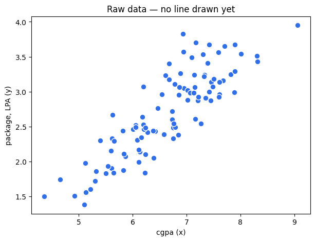
Output from this notebook.
Step 2 — Try two candidate lines
The first screenshot shows a line drawn, then redrawn several times,
with red triangles marking "ERROR" wherever a point is far from the line.
That full redraw-again-and-again sequence is what Gradient Descent does
for real, later, in Step 7–8 — the for epoch in ... loop there is
where the line actually gets redrawn multiple times and walks toward the
best fit.
Here, as a warm-up, we just freeze two single frames of that idea by
hand: one bad guess for (m, c) and one decent guess, so we can look at
the gaps by eye before we ever put a number on them.
predict() below is just y = m·x + c from 25 — nothing new.
Define the model itself: given a slope m, an intercept c, and
some x values, predict() returns the line's ŷ for every one of
them, all at once (numpy applies the formula to the whole array).
codecell 10
def predict(x, m, c):
return m * x + c # the whole model: multiply slope by x, then shift by intercept
Pick the two guesses: m_bad, c_bad is a careless, too-flat line;
m_decent, c_decent is close to the true best-fit line (confirmed later,
in Step 9). Run both through predict() to get a predicted ŷ for every
one of the 100 rows.
codecell 12
m_bad, c_bad = 0.1, 0.5 # a careless guess -- too flat, shifted up
m_decent, c_decent = 0.59, -1.23 # close to the true best-fit line (checked later in Step 9)
y_hat_bad = predict(x, m_bad, c_bad) # predicted package for every row, using the bad line
y_hat_decent = predict(x, m_decent, c_decent) # predicted package for every row, using the decent line
y_hat_bad[:5], y_hat_decent[:5]
Plot both lines over the same scatter, plus a thin vertical bar
from every actual point down to the bad line — that bar is one row's
error, the same "red triangle" idea from the screenshot, just drawn as a
line instead of a triangle marker.
codecell 14
plt.figure(figsize=(8, 5))
plt.scatter(x, y, color="#2f6fed", edgecolor="white", s=50, label="actual data", zorder=3)
# vertical error bars for the bad line only — this is the "red triangle" picture from the screenshot
for xi, yi, yhi in zip(x, y, y_hat_bad):
plt.plot([xi, xi], [yi, yhi], color="#b3781f", linewidth=1, alpha=0.5, zorder=1)
order = np.argsort(x) # sort by x first, otherwise plt.plot() draws a zig-zag instead of a straight line
plt.plot(x[order], y_hat_bad[order], color="#b3781f", linewidth=2, label=f"bad guess: m={m_bad}, c={c_bad}")
plt.plot(x[order], y_hat_decent[order], color="#2f9e6f", linewidth=2, label=f"decent guess: m={m_decent}, c={c_decent}")
plt.xlabel("cgpa (x)")
plt.ylabel("package, LPA (y)")
plt.title("Bad line vs. decent line — orange bars are the errors")
plt.legend()
plt.show()
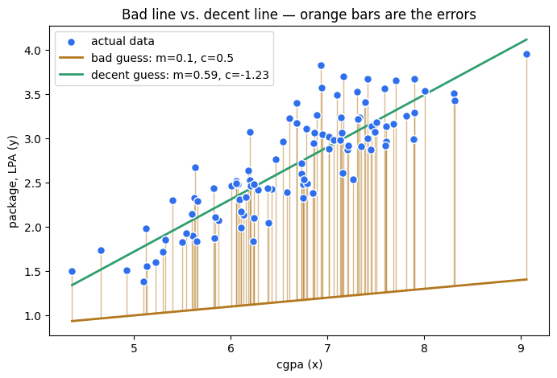
Output from this notebook.
Just by eye, the green line hugs the dots far better than the orange
one — the orange vertical bars (the errors) are long and one-sided, mostly
sitting above the line because the bad line is too flat and shifted too
high. "Looks better" still isn't a number though — that's what Step 3
fixes.
Step 3 — Build Mean Squared Error ourselves
Straight from the course's formula slide:
MSE = (1/n) × Σ (yᵢ − ŷᵢ)²
In plain English: for every row, take (actual − predicted), square it, add
all of those up, then divide by how many rows there are. No
scikit-learn helper here — this is the formula typed out by hand so
there's no doubt what it's actually doing.
codecell 17
def mean_squared_error(y_actual, y_predicted):
errors = y_actual - y_predicted # actual minus predicted, one number per row
squared_errors = errors ** 2 # square each one -- negatives become positive, big misses grow fast
return np.mean(squared_errors) # average across every row -- the formula's (1/n) x sum
Now measure both guesses from Step 2 with this real formula,
instead of just eyeballing the chart.
The decent line's MSE is much smaller than the bad line's. That's
the whole point of a cost function from 29, now backed by an actual
number instead of a vibe: smaller MSE = better line, and now we have a way
to compare any two candidate lines objectively.
Step 4 — Why square the errors instead of just subtracting?
29's FAQ claimed raw (unsquared) differences can cancel out. Let's check
that claim on our own decent line instead of taking it on faith — compute
the plain, unsquared error for every row and average those directly.
codecell 22
raw_errors = y - y_hat_decent # actual minus predicted, NOT squared this time
mean_raw_error = np.mean(raw_errors) # average of the raw (signed) errors
mean_raw_error
Output
np.float64(0.019351000000000226)
Now put that raw-error average side by side with the squared
version from Step 3, computed on the exact same line.
The mean of the raw errors is close to zero — points above the
line and points below the line cancel each other out almost completely,
even though the line is clearly missing plenty of points by a fair
margin. If we tried to minimize that number, the model would think it's
already almost perfect. Squaring first (mean_squared_error_decent) forces
every error positive before averaging, so misses can't hide behind each
other — which is exactly what the "Error in square term" note from the
slide is pointing at.
Step 5 — Draw the cost bowl for real
29 showed a hand-drawn bowl-shaped curve of cost vs. slope m. Let's
actually compute it: hold c fixed at the best value found later in
Step 9 (-1.226), sweep m across a wide range, and calculate real MSE at
every single value.
codecell 27
m_range = np.linspace(-0.5, 1.7, 200) # 200 candidate slopes to test, evenly spaced
c_fixed = -1.226 # hold the intercept fixed, so this is a clean 2-D picture
costs = [mean_squared_error(y, predict(x, m_candidate, c_fixed)) for m_candidate in m_range]
costs = np.array(costs) # one MSE value per candidate slope in m_range
costs[:5]
Find which of those 200 slopes actually gave the lowest cost —
that's the bottom of the bowl, in real numbers.
codecell 29
best_index = np.argmin(costs) # position of the smallest cost in the list
best_m_from_sweep = m_range[best_index] # the slope at that position
best_cost_from_sweep = costs[best_index] # the cost at that position
best_m_from_sweep, best_cost_from_sweep
Plot cost against candidate slope — the green dot marks the minimum
we just found.
codecell 31
plt.figure(figsize=(7, 5))
plt.plot(m_range, costs, color="#2f6fed", linewidth=2)
plt.scatter([best_m_from_sweep], [best_cost_from_sweep], color="#2f9e6f", s=90, zorder=3,
label=f"minimum ≈ m={best_m_from_sweep:.3f}")
plt.xlabel("candidate slope, m (c held fixed)")
plt.ylabel("MSE — J(m)")
plt.title("The cost bowl — real computed numbers, not a sketch")
plt.legend()
plt.show()
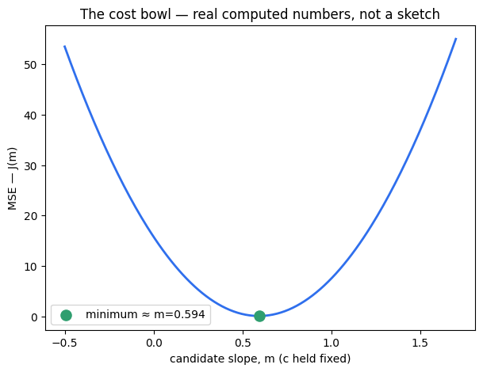
Output from this notebook.
This is the real version of the hand-drawn curve in 29: a smooth
bowl with one lowest point. Every m too small or too large costs more.
"Training the model" is nothing more mysterious than finding this exact
dip. Checking m one value at a time in a loop like this is fine for a
demo with one parameter — for real training, that's far too slow and
doesn't scale past one parameter. That's exactly the job Gradient Descent
does next.
Step 6 — Gradient Descent: turning "walk downhill" into a formula
The note taken while watching already has the right idea:
Note
"To identify the best fit line, mNew = mOld - learningRate(dl/dm)."
That's exactly Gradient Descent. dl/dm (the slope of the cost bowl at
the current m) tells us which direction is uphill; subtracting a small
step in that direction always moves downhill, toward lower cost. The
same update happens for c at the same time.
Where do dL/dm and dL/dc come from? They're the calculus
derivative of the MSE formula from Step 3, worked out once and reused as a
fixed recipe — you don't re-derive this every time, the same way you don't
re-derive how HashMap.get() works before calling it:
learningRate controls how big each step downhill is — too small and
training crawls; too large and it overshoots the bottom of the bowl and
can even bounce out of it entirely (tested below).
As code, the two derivatives above become one small function:
codecell 34
def gradients(x, y, m, c):
y_hat = predict(x, m, c) # current line's prediction for every row
error = y - y_hat # how far off each prediction is (signed, not squared)
dL_dm = -(2 / len(x)) * np.sum(x * error) # dL/dm from the formula above
dL_dc = -(2 / len(x)) * np.sum(error) # dL/dc from the formula above
return dL_dm, dL_dc
Before picking a real learning rate, deliberately try a big one
(0.05) for just 5 steps, to see what "too big" looks like in actual
numbers.
codecell 36
# quick proof that too-large a learning rate breaks Gradient Descent, before we pick a working one
m_test, c_test = 0.0, 0.0
for _ in range(5):
dL_dm, dL_dc = gradients(x, y, m_test, c_test)
m_test = m_test - 0.05 * dL_dm # learning_rate = 0.05, deliberately too big
c_test = c_test - 0.05 * dL_dc
m_test, c_test # blown up / not a real slope and intercept -- confirms 0.05 is too large
0.05 sends m and c off to huge, useless numbers within a handful
of steps — it keeps overshooting the bottom of the bowl and flying further
out each time. 0.02 turns out to be small enough to stay stable. That's
found by testing, the same way you'd tune a retry backoff or a rate
limit — there's no formula that hands you the "correct" learning rate up
front.
Step 7 — Run Gradient Descent, and save snapshots along the way
This is the step that literally answers "where does the line get drawn
and redrawn multiple times?" Starting from m = 0, c = 0 (the flattest,
laziest possible guess), we run 8000 update steps. At a handful of
checkpoints we save a "photo" of the current (m, c) — those saved
photos are what get plotted as separate lines in Step 8.
Split into three small cells: first the settings, then the loop itself,
then reading off the final answer.
Settings and empty containers, all in one place before the loop
starts.
codecell 40
learning_rate = 0.02 # step size -- tuned above; 0.05 was too big, 0.02 stays stable
epochs = 8000 # how many times we'll nudge m and c
snapshot_epochs = {0, 1, 2, 5, 20, 100, 1000, epochs} # which epochs to freeze -- used by the Step 8 plot
m, c = 0.0, 0.0 # start from the flattest, laziest possible guess
cost_history = [] # MSE at every single epoch -- for the "cost vs epoch" plot in Step 8
snapshots = [] # (epoch, m, c) saved only at snapshot_epochs -- these become the redrawn lines
The loop itself — this is where the line actually gets redrawn,
again and again. Each pass: maybe save a photo, record the current cost,
then nudge m and c one step downhill using the exact
mNew = mOld - learningRate × dL/dm rule from Step 6.
codecell 42
for epoch in range(epochs + 1):
if epoch in snapshot_epochs:
snapshots.append((epoch, m, c)) # freeze a "photo" of the current line -- this IS the redraw
cost_history.append(mean_squared_error(y, predict(x, m, c))) # how good is the current line, right now
if epoch == epochs:
break # last epoch: record it, but don't take one more step past it
dL_dm, dL_dc = gradients(x, y, m, c) # which way is uphill, from here
m = m - learning_rate * dL_dm # step downhill for the slope -- mNew = mOld - lr * dL/dm
c = c - learning_rate * dL_dc # step downhill for the intercept -- cNew = cOld - lr * dL/dc
Whatever (m, c) the loop landed on after all 8000 steps is the
trained line — read it off here.
codecell 44
m_final, c_final = m, c # the line the loop settled on after 8000 steps
m_final, c_final
Look at the MSE column top to bottom: 5.31 → 3.69 → ... → 0.095.
Cost drops fast at first, then flattens out as (m, c) gets close to the
bottom of the bowl from Step 5 — the classic shape of Gradient Descent
working correctly. Notice epoch 1 and epoch 2 aren't smoothly decreasing —
m overshoots slightly before correcting itself, a smaller, harmless
version of the same overshoot that blew up completely at
learning_rate = 0.05 above.
Step 8 — Watch the line redraw itself
This is the exact picture the first screenshot is showing: the same line,
drawn again and again, creeping closer to the data with every redraw. The
loop below draws the scatter once, then adds one line per saved
snapshot from Step 7 — draw, redraw, redraw again.
codecell 49
plt.figure(figsize=(8, 6))
plt.scatter(x, y, color="#8a8f98", edgecolor="white", s=45, label="actual data", zorder=2)
colors = ["#d64545", "#e08a2b", "#b3781f", "#8a8f98", "#6a8fd8", "#2f6fed", "#1e4fae", "#2f9e6f"]
x_line = np.linspace(x.min(), x.max(), 50) # smooth set of x-values just for drawing straight lines
for (epoch, m_i, c_i), color in zip(snapshots, colors):
plt.plot(x_line, predict(x_line, m_i, c_i), color=color, linewidth=2,
label=f"epoch {epoch}: m={m_i:.3f}, c={c_i:.3f}") # one redraw per saved snapshot
plt.xlabel("cgpa (x)")
plt.ylabel("package, LPA (y)")
plt.title("Gradient Descent redrawing the line, epoch by epoch")
plt.legend(fontsize=8, loc="upper left")
plt.show()
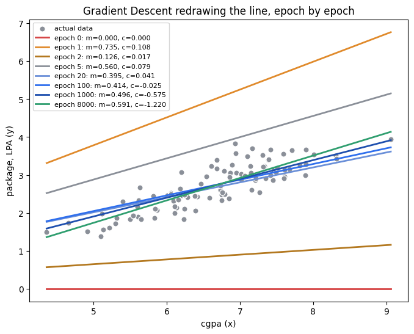
Output from this notebook.
Same training run, viewed a second way: cost per epoch instead of
lines on the scatter plot.
codecell 51
plt.figure(figsize=(7, 5))
plt.plot(range(len(cost_history)), cost_history, color="#2f6fed")
plt.xlabel("epoch")
plt.ylabel("MSE")
plt.title("Cost falling as Gradient Descent walks down the bowl from Step 5")
plt.show()
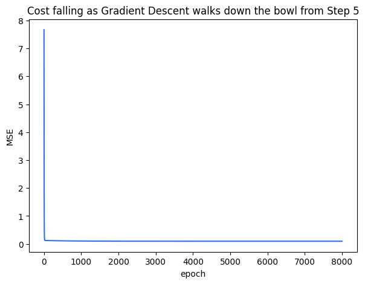
Output from this notebook.
The first line (epoch 0, flat at m=0) is a bad guess. By epoch 20
it already roughly tracks the trend. By the final epoch it sits right on
top of the decent-guess line from Step 2 — Gradient Descent found that line
on its own, using nothing but the slope of the cost bowl at each step.
The cost curve above is the exact same walk, just viewed as "cost over
time" instead of "line over the scatter plot" — two views of one process.
Step 9 — Sanity check: does this match scikit-learn?
Our from-scratch Gradient Descent should land close to whatever
scikit-learn's LinearRegression finds using Ordinary Least Squares
(the closed-form shortcut mentioned in 25/29) on the same data — two
different roads to the same destination.
codecell 54
from sklearn.linear_model import LinearRegression # scikit-learn's Simple Linear Regression, same as 26
x_2d = dataset[["cgpa"]] # scikit-learn wants features as a 2-D table, even with just 1 column
y_1d = dataset["package"] # target stays 1-D
sklearn_model = LinearRegression().fit(x_2d, y_1d) # .fit() runs Ordinary Least Squares internally
m_sklearn = sklearn_model.coef_[0] # the slope it found
c_sklearn = sklearn_model.intercept_ # the intercept it found
m_sklearn, c_sklearn
method m c MSE
0 Gradient Descent (ours) 0.591495 -1.22047 0.09519
1 scikit-learn (OLS) 0.592319 -1.22603 0.09519
m and c from our 8000-step Gradient Descent loop land almost
exactly on scikit-learn's answer — with more epochs (or a smarter
learning-rate schedule) the two would keep converging closer still. This
confirms the from-scratch formulas in Step 6 are correct, not just
plausible-looking.
Step 10 — Is MSE actually "robust" to outliers?
A note taken from the slides says "Mean squared error is robust with
outlier, where it shows wrong prediction." Worth checking directly,
because the more common claim (and the one 29's table already made) is
the opposite: MSE is sensitive to outliers, not robust to them —
squaring a large error makes it count far more than a small one, so one
badly-wrong prediction can swamp the score for the other 99 good ones.
"It shows a wrong prediction" is exactly right; "robust" is the part to
flip. Let's prove it instead of arguing about wording.
Plan: take the best-fit line from Step 9, measure its MSE and MAE on the
real 100 rows, then add one deliberately wrong row and measure both
again.
codecell 59
baseline_yhat = predict(x, m_sklearn, c_sklearn) # predictions from the trusted best-fit line
baseline_mse = mean_squared_error(y, baseline_yhat)
def mean_absolute_error(y_actual, y_predicted):
return np.mean(np.abs(y_actual - y_predicted)) # MAE: absolute value instead of squaring
baseline_mae = mean_absolute_error(y, baseline_yhat)
baseline_mse, baseline_mae
Add one fake row to both x and y — same best-fit line, same
formulas, just one more (very wrong) data point in the mix.
codecell 61
# one deliberately wrong row: a 6.9 cgpa student "offered" 15 LPA (real max in the data is under 4 LPA)
x_with_outlier = np.append(x, 6.9) # same 100 rows, plus the fake row's cgpa
y_with_outlier = np.append(y, 15.0) # plus the fake row's absurd package
outlier_yhat = predict(x_with_outlier, m_sklearn, c_sklearn) # predict all 101 rows with the SAME line as before
outlier_mse = mean_squared_error(y_with_outlier, outlier_yhat)
outlier_mae = mean_absolute_error(y_with_outlier, outlier_yhat)
outlier_mse, outlier_mae
metric before outlier (100 rows) after 1 outlier (101 rows) growth factor
0 MSE 0.095190 1.553217 16.317033
1 MAE 0.251865 0.369560 1.467292
One chart makes the difference obvious: how far each metric jumped
from a single bad row, side by side.
codecell 65
plt.figure(figsize=(6, 5))
plt.bar(outlier_comparison["metric"], outlier_comparison["growth factor"], color=["#d64545", "#2f9e6f"])
plt.ylabel("growth factor (after 1 outlier ÷ before)")
plt.title("One outlier out of 101 rows — MSE vs. MAE reaction")
plt.axhline(1, color="#8a8f98", linewidth=1)
for i, v in enumerate(outlier_comparison["growth factor"]):
plt.text(i, v + 0.3, f"×{v:.1f}", ha="center")
plt.show()
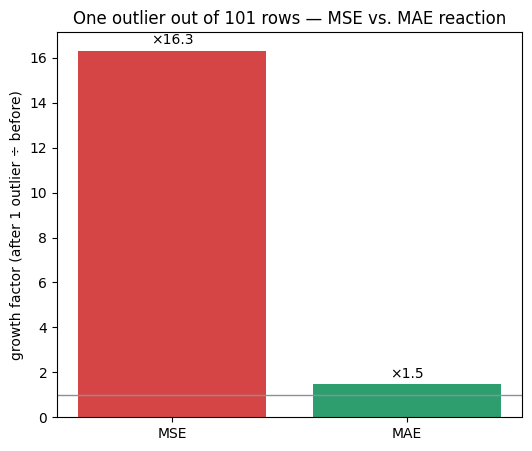
Output from this notebook.
One single outlier — 1 row out of 101 — makes MSE jump about 16×,
while MAE only grows by about 1.5×. That's the proof: MSE is not robust
to outliers, it's the opposite — because it squares the error, one very
wrong prediction dominates the whole cost, while MAE (which just takes the
absolute value) treats that same row as "one more medium-sized mistake"
among many. 29's table already noted "MAE... more robust to outliers
than MSE" — this is that exact claim, now backed by a computed ×16 vs.
×1.5 number instead of a one-line note.
Quick Recap
Step
What we proved
With what
2–3
A cost function turns "looks better" into a real number
mean_squared_error(), two candidate lines
4
Squaring stops positive/negative errors from cancelling out
mean of raw errors ≈ 0, mean of squared errors > 0
5
The cost bowl from 29 is real, not just a sketch
swept 200 values of m, computed MSE at each
6–8
mNew = mOld − learningRate × dL/dm finds the bottom of the bowl on its own
Our from-scratch answer matches the textbook method
compared against scikit-learn's LinearRegression
10
MSE is sensitive to outliers, not robust
one outlier row → MSE ×16, MAE ×1.5
FAQ — Common Mix-Ups
"Is MSE robust to outliers?"
No — this is the single most important correction in this notebook.
MSE squares every error, so one very wrong prediction contributes far
more to the total than many small, ordinary errors combined (proven in
Step 10: ×16 growth from one bad row). MAE is the metric that's
comparatively robust to outliers, because it only takes the absolute
value instead of squaring.
"Why does Gradient Descent need a learning rate at all — why not
just jump straight to the minimum?"
For Simple Linear Regression specifically, Ordinary Least Squares can
jump straight there with a closed-form formula (that's what
scikit-learn's .fit() does in Step 9). Gradient Descent is the
general-purpose tool that works even when no such shortcut formula
exists (logistic regression, neural networks, …) — it has to feel its
way downhill step by step instead, and the learning rate controls how
big each feeling-around step is.
"What happens if the learning rate is too big?"
Step 6 showed it directly: learning_rate = 0.05 sent m and c to
huge, meaningless numbers within 5 steps — each update overshoots the
bottom of the bowl and lands further out than before, instead of
settling in. Too small, and training just takes far more epochs to
reach the same answer.
"Do we need calculus to use Gradient Descent day to day?"
No. dL/dm and dL/dc in Step 6 are a fixed recipe, derived once —
the same way you don't re-derive how a HashMap resizes before calling
.put(). Knowing what the update rule does (step downhill,
proportional to slope) matters far more day-to-day than re-deriving it.
"Where exactly does the line get 'drawn multiple times'?"
In Step 7's for epoch in range(epochs + 1): loop — specifically the
two lines m = m - learning_rate * dL_dm and
c = c - learning_rate * dL_dc, which run once per epoch, 8000 times
total. Step 2's two lines are just a before/after snapshot for
comparison, not the redraw process itself; Step 8 plots several of the
snapshots that loop actually saved.
Interview-Style Q&A
Q: Write the Gradient Descent update rule for the slope m, and explain
each term.
A: mNew = mOld − learningRate × dL/dm. dL/dm is the derivative (slope)
of the cost function with respect to m at the current guess — it points
uphill. Subtracting a small multiple of it (learningRate) moves m a
step downhill, toward lower cost. The same update runs for c at the same
time, using dL/dc.
Q: Why is MSE described as "sensitive to outliers," concretely?
A: Because the error term is squared before averaging. A residual of 10 is
20× worse than average, but its squared contribution is 100 units — far
more than proportionate. One extreme row can dominate the total MSE even
if every other row fits the line well, which is exactly what Step 10
measured (×16 MSE growth from a single outlier vs. ×1.5 for MAE).
Q: If Gradient Descent and Ordinary Least Squares reach almost the same
m and c for Simple Linear Regression, why bother with Gradient
Descent at all?
A: For plain Linear Regression, OLS is strictly better — it's exact and
non-iterative. Gradient Descent earns its keep on models where no
closed-form formula exists (logistic regression, neural networks with many
layers, …). Simple Linear Regression is just the easiest place to build
and sanity-check a Gradient Descent implementation, because you already
have a trustworthy answer (OLS) to check it against.
Q: What would happen to the cost bowl from Step 5 if the learning rate
in Gradient Descent were replaced by a fixed step size that never
shrinks?
A: It could overshoot the minimum indefinitely, oscillating back and forth
across the bottom of the bowl (or, if the step is too large relative to
the bowl's steepness, diverge outward entirely — exactly what happened
with learning_rate = 0.05 in Step 6). The learning rate has to be small
enough, relative to the steepness of the bowl, for each step to actually
land closer to the minimum than the last.
Coming Up Next
⬜ Gradient Descent as its own topic — batch vs. stochastic vs. mini-batch,
and learning-rate scheduling, once we reach a model where the
closed-form shortcut (OLS) isn't available.
⬜ Logistic Regression — the first place a genuinely different cost
function (cross-entropy, previewed in 29) becomes necessary instead of
optional.
30_Cost_Function_MSE_GradientDescent.ipynb already built MSE from scratch
and ran Gradient Descent on it. 31_Mean_Absolute_Error.MD and
32_Root_Mean_Squared_Error.MD covered MAE and RMSE conceptually, but only
on paper (the 5-student quiz example). This notebook is the hands-on
version: build all three cost functions ourselves, run them on the same
real dataset, and compare what each one reports.
Step 1 — Load the data
Reusing ../../_shared_data/placement.csv (cgpa → package) — the same file used in
25/26/29/30 — so every number here is directly comparable to what
came before.
codecell 2
import pandas as pd # pandas: load the CSV and work with it as a table
import numpy as np # numpy: arrays, sums, means -- all the math below
import matplotlib.pyplot as plt # matplotlib: charts, once we get to them
dataset = pd.read_csv("../../_shared_data/placement.csv") # same 100-row file used in 25, 26, 29, 30
dataset.head() # peek at the first 5 rows -- sanity check
x = dataset["cgpa"].values # independent variable, as a plain numpy array
y = dataset["package"].values # dependent variable (actual values), as a plain numpy array
n = len(x) # how many rows/students we have -- the "n" in every formula below
n
Output
100
codecell 4
def predict(x, m, c):
return m * x + c # the whole model: multiply slope by x, then shift by intercept
m_bad, c_bad = 0.1, 0.5 # a careless guess -- too flat, shifted up
m_decent, c_decent = 0.59, -1.23 # close to the true best-fit line
y_hat_bad = predict(x, m_bad, c_bad) # predicted package for every row, using the bad line
y_hat_decent = predict(x, m_decent, c_decent) # predicted package for every row, using the decent line
y_hat_bad[:5], y_hat_decent[:5]
def mean_squared_error(y_actual, y_predicted):
errors = y_actual - y_predicted # actual minus predicted, one number per row
squared_errors = errors ** 2 # square each one -- negatives become positive, big misses grow fast
return np.mean(squared_errors) # average across every row
codecell 6
mean_squared_error(y, y_hat_bad)
Output
np.float64(2.6509399899999995)
codecell 7
def gradients(x, y, m, c):
y_hat = predict(x, m, c) # current line's prediction for every row
error = y - y_hat # how far off each prediction is (signed, not squared)
dL_dm = -(2 / len(x)) * np.sum(x * error) # slope of the MSE bowl, in the m direction
dL_dc = -(2 / len(x)) * np.sum(error) # slope of the MSE bowl, in the c direction
return dL_dm, dL_dc
codecell 8
gradients(x, y, m_bad, c_bad)
Output
(np.float64(-21.1708142), np.float64(-3.07718))
codecell 9
learning_rate = 0.02 # step size for each update -- small enough to stay stable, found by testing
epochs = 8000 # how many times we'll nudge m and c
m, c = 0.0, 0.0 # start from the flattest, laziest possible guess
cost_history = [] # track MSE at every step, just so we can watch it fall
for epoch in range(epochs):
cost_history.append(mean_squared_error(y, predict(x, m, c))) # how good is the line right now?
dL_dm, dL_dc = gradients(x, y, m, c) # which way is downhill, from here?
m = m - learning_rate * dL_dm # take one small step downhill
c = c - learning_rate * dL_dc
m_final, c_final = m, c
m_final, c_final , cost_history[:5], cost_history[-5:]